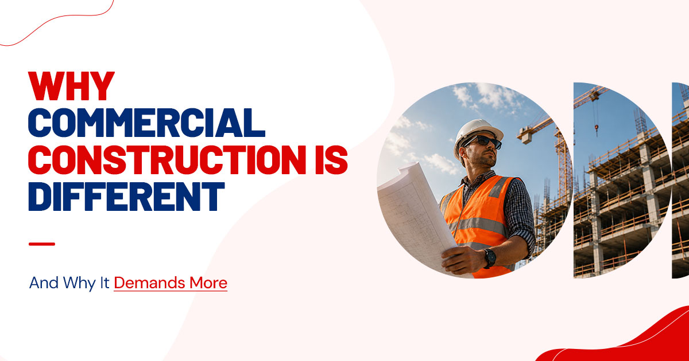
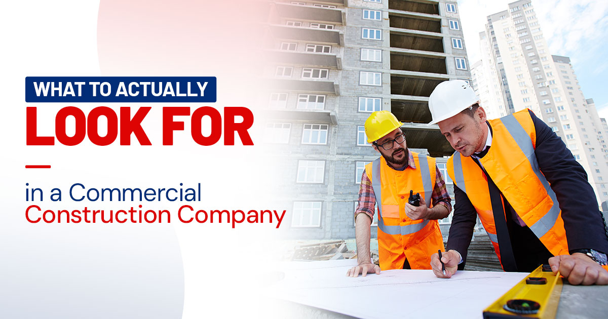
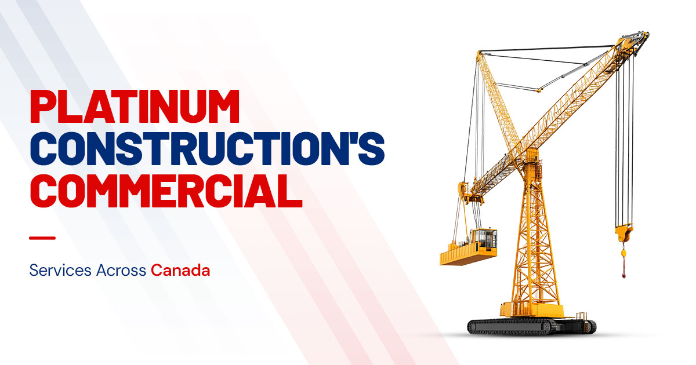

Finding a trustworthy commercial construction company in Canada is not always easy. You have probably heard the stories. A business owner signs a contract with a builder who looked great on paper, only to deal with months of delays, ballooning costs, and a finished space that missed the mark entirely. It is frustrating, expensive, and, with the right information, completely avoidable.
This guide is written to help Canadian business owners, developers, and property managers make a confident, informed decision when selecting a commercial builder. We will walk through what actually matters, what questions to ask, and why Platinum Construction has earned the trust of commercial clients across the country. For an overview of how we deliver these projects end to end, see our construction services.

Why Commercial Construction Is Different, and Why It Demands More
Commercial construction is not residential building at a larger scale. It is an entirely different discipline.
The regulatory environment is stricter. The timelines are tighter. The financial stakes are higher. And when something goes wrong on a commercial site, whether it is a permit delay, a subcontractor who does not show up, or a structural issue caught late, the ripple effects hit your business directly. Delayed occupancy means delayed revenue.
That is why choosing the right construction company from the start is not just important. It is essential. The best commercial builders understand this pressure. They do not just construct buildings; they manage risk, coordinate complex teams, and deliver spaces that help businesses succeed.

What to Actually Look for in a Commercial Construction Company
There is no shortage of builders willing to take on your project. But quality and reliability vary enormously. Here is a practical breakdown of what separates great commercial construction companies from the ones that cost you more in the long run.
| What to evaluate | Why it matters |
|---|---|
| Experience with your project type | Office, retail, industrial, and mixed-use builds each have unique demands. Ask for relevant past projects. |
| Local regulatory knowledge | Canadian provinces have different building codes, zoning rules, and permit processes. Local expertise prevents costly delays. |
| Subcontractor network quality | A strong building construction company has trusted, vetted trades on speed dial, not whoever is available that week. |
| Transparent cost estimation | Vague quotes lead to surprise invoices. Look for detailed, itemized proposals with clear scope definitions. |
| Dedicated project management | You need one accountable point of contact, not a revolving door of unfamiliar faces on your site. |
| Safety record | A clean safety history reflects organizational discipline, and protects you from liability. |
| Client references | Past clients tell you what a company's marketing never will. Always ask for them. |
Platinum Construction meets every one of these standards, and we will show you exactly how.

Platinum Construction's Commercial Services Across Canada
We are a full-service commercial construction company serving clients from Victoria to St. John's. Here is what we build and how we build it.
Office & Corporate Spaces
Modern workplaces need to do more than look professional. They need to support how your team actually works: collaboration, focus, flexibility, and well-being.
Our team designs and constructs office environments that balance form and function, from single-floor tenant fit-outs to ground-up multi-storey corporate buildings. We handle structural work, mechanical and electrical systems, interior finishing, and everything in between under one roof, with one accountable team. See our commercial and industrial construction service for the full scope.
Retail & Mixed-Use Developments
Retail construction is as much about customer experience as it is about building science. A well-designed retail space draws people in, keeps them comfortable, and reflects your brand from the moment they approach the entrance.
Platinum Construction has delivered standalone storefronts, anchor-tenant plazas, strip malls, and complex mixed-use developments that blend retail, residential, and office components. We understand what retail tenants need: accessible layouts, strong frontage, and efficient back-of-house areas. Then we deliver it.
Industrial Facilities
Industrial construction companies operate in one of the most demanding segments of the industry. Heavy structural loads, large-span building systems, specialized equipment foundations, cold storage requirements, loading dock configurations: these are not details you want a generalist handling.
Our industrial division has successfully delivered warehouses, manufacturing plants, distribution centres, and processing facilities across Canada. We bring genuine technical depth to every industrial project, with safety and compliance built into every phase.
Institutional & Specialty Commercial Builds
Healthcare clinics, educational facilities, community centres, government buildings: institutional construction carries its own regulatory complexity and community responsibility. Platinum Construction approaches these projects with the rigor and sensitivity they deserve, ensuring every build meets both technical standards and the needs of the people who will use the space.
One of the clearest advantages of working with Platinum Construction is our genuine regional presence. We are not a head office operation that parachutes crews into unfamiliar cities. We are a local construction company in every market we serve, with on-the-ground knowledge of local codes, local suppliers, and local conditions.
| Region | Markets served | Common project types |
|---|---|---|
| Ontario | GTA, Ottawa, Hamilton, London, Windsor | Office, retail, mixed-use, industrial |
| British Columbia | Vancouver, Surrey, Kelowna, Victoria | Commercial fit-outs, mixed-use, retail |
| Alberta | Calgary, Edmonton, Red Deer, Lethbridge | Industrial, office, commercial retail |
| Atlantic Canada | Halifax, Moncton, Fredericton, St. John's | Institutional, retail, commercial office |
| Saskatchewan & Manitoba | Saskatoon, Regina, Winnipeg | Industrial, commercial, institutional |
Wherever your project is located in Canada and America, Platinum Construction brings consistent standards, consistent quality, and a team that understands your local environment. Recent builds are in our project gallery.
The Platinum Construction Difference, Built on Accountability
A lot of commercial builders make the same promises. Experienced team. On time. On budget. Quality workmanship. The words start to blur together after a while.
So let us talk about what accountability actually looks like in practice, because that is what makes the difference between a good project experience and a painful one.
One Project Manager, Start to Finish
Every commercial project at Platinum Construction is assigned a dedicated project manager who owns the schedule, coordinates all trades, manages procurement, and serves as your single point of contact. When you call with a question, you reach someone who knows your project inside out, not a receptionist routing you through departments. This is the core of our construction project management service.
No Surprise Costs
We provide detailed, itemized proposals before any work begins. If site conditions or client decisions require a scope change, we discuss it with you before proceeding, never after. You are in control of your budget from day one.
Safety on Every Site
Our safety programs exceed provincial requirements across every Canadian jurisdiction we operate in. A safe site is a productive site, and our record reflects a genuine culture of care, not compliance theater.
Warranty-Backed Workmanship
We stand behind everything we build. Platinum Construction provides written workmanship warranties on all commercial projects, giving clients long-term confidence in their investment.
Frequently Asked Questions
How long does a commercial construction project take?
Project timelines depend on the scope and complexity. Smaller fit-outs may take weeks, while larger builds can take several months or years.
Does Platinum Construction offer design-build services?
Yes. We provide integrated design-build solutions with a single point of responsibility from concept to completion.
Do you handle permits and regulatory approvals?
Absolutely. Our team manages permits, inspections, and compliance with all applicable building codes.
Can you work around active businesses?
Yes. We create phased construction plans to minimize disruptions and maintain safe access during the project.
What types of commercial projects do you specialize in?
We handle office, retail, industrial, institutional, and interior renovation projects across Canada.
How do you keep projects on schedule?
Detailed pre-construction planning and proactive project management help us maintain realistic timelines.
Why choose Platinum Construction?
We combine quality craftsmanship, transparent communication, and dependable project delivery for every client.
Ready to Move Your Commercial Project Forward?
If you are looking for a commercial construction company in Canada that combines local expertise, technical capability, and genuine accountability, you have found it.
Platinum Construction has the experience, the team, and the track record to take your commercial project from concept to completion the right way. No runarounds, no hidden surprises, no compromises on quality.
Contact us today for a free project consultation. Tell us about your build. We will tell you exactly how we can help.